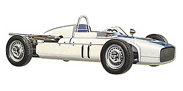

Завод "Москвич"
Экспериментальные модели
- 1940 — КИМ-10-52, выпущено 2 автомобиля, один из них хранится в московском политехническом музее.
- 1947 — Москвич МЗМА-400-420, купе, опытный вариант грузовой машины на базе, созданный на базе седана 400 семейства. Судя по сохранившимся фотографиям, существовало как минимум три версии прототипа, в том числе внедорожный вариант и модификация с прицепом. В серийное производство автомобиль не попал, но, вероятно, послужил базой для создания аэродромного пускового агрегата (АПА-7), служившего для запуска первых отечественных турбореактивных самолетов. АПА-7 было изготовлено не менее 1000 штук
- 1947 — Москвич МЗМА-400-421, универсал, прототип с частично деревянным пятидверным кузовом (для экономии металла), созданный на базе фургона 400—422. Было построено несколько экспериментальных машин (в том числе вариант с дверями, открывавшимися по ходу движения), но в серию модель не пошла.
- 1949 — Москвич МЗМА-403Э-424Э, опытная модель москвича. Планировалось что эта обновленная модель заменит на конвейере устаревшую 400-ю модель. МЗМА-403Э-424Э отличались наружными навесными панелями кузова, коробкой передач с переключателем на рулевой колонке, капотом аллигаторного типа, горизонтально расположенным запасным колесом. Силовой каркас кузова и шасси остались без изменений. Для внедрения нового кузова (424) требовались новые штампы, которые МЗМА самостоятельно изготовить не мог, валюта на их приобретение за границей так же не была выделена, и новый кузов в серию не пошел.
- 1951 — Москвич МЗМА-403Э-424Э, купе, прототип спортивной модели, построенный на базе экспериментальной модели «403-423Э». На двух построенных экземплярах использовался либо опытный двигатель модели «403», либо форсированный модели «400», у которого головка и впускной коллектор были отлиты из алюминия, изменены фазы газораспределения, увеличен диаметр впускных клапанов и установлен масляный радиатор. При массе 850 кг машина достигала скорости 123 км/ч.
- 1955 — Москвич МЗМА-402, один из первых прототипов популярной малолитражки. Кузов этого автомобиля был спроектирован на Горьковском автозаводе, там же были изготовлены мастер-модели для производства наружных панелей и других деталей. Первый опытный образец в дизайне экстерьера представлял собой практически копию «Волга» ГАЗ-21 (со скидкой на размеры), создававшейся параллельно.
- 1956—1958 — Москвич МЗМА-444, выпущена небольшая установочная серия, послужил прототипом для ЗАЗ-965, выпускавшегося в 1960—1969 гг. на заводе «Коммунар» под маркой «Запорожец».
- 1957 — Москвич-415, первая серия, внедорожник, рамный полноприводный, с открытым кузовом в стиле «Виллис-МБ».
- 1958 — Москвич-415, вторая серия, внедорожник, рамный полноприводный, с открытым кузовом в стиле «Виллис-МД» (Jeep М-38А1).
- 1959—1961 — Москвич-415, третья серия, внедорожник, рамный полноприводный, с открытым кузовом оригинального дизайна, серийно не выпускался.
- 1959—1961 — Москвич-416, внедорожник, рамный полноприводный, с закрытым кузовом (на базе Москвич-415 второй серии), серийно не выпускался.
- 1959 — Москвич МЗМА-А9, 8-местный экспериментальный микроавтобус, построенный на базе агрегатов легкового автомобиля «Москвич-402» и отдельных узлов ГАЗ-21. У него был несущий стальной четырехдверный кузов, двигатель впереди и независимая подвеска передних колес. На машине, построенной в единственном экземпляре, стояли двигатель модели «407», опытная коробка передач, однотипная с применявшейся на гоночном «Москвиче Г1-405». Задняя торцевая дверь была двухстворчатой. На базе автобуса были изготовлены два образца кузова вагонного типа для унифицированного с ним фургона «Москвич ФВТ», рассчитанного на 500 кг груза. Созданный образец «Москвич-А9» был впоследствии передан на Московский завод автомобильных кузовов (впоследствии Московский завод специализированных автомобилей) по инициативе его директора К. Д. Дурнова, где использовался в служебного транспорта как минимум до конца 1960-х годов. Технические характеристики: длина — 4050 мм, ширина — 2000 мм, высота — 1810 мм, база — 2310 мм, снаряженная масса — 1500 кг, рабочем объем — 1360 см?, мощность — 45 л. с., максимальная скорость — 100 км/ч. Серийно не выпускался.
- 1963 — Москвич-408 «Турист», купе-кабриолет класса GT (Gran Turismo), опытный автомобиль с двухдверным кузовом, оснащенный съемной жесткой крышей. Машина была создана на базе Москвича-408 «Элит» с четырёхфарной системой головного света, готовившегося к производству, приводилась в движение двигателями, оснащенными экспериментальной системой впрыска топлива с электронным управлением. Двери прототипа были лишены рамок стекла, формула пассажирской вместимости «2+2». По некоторым данным, один из собранных автомобилей имел наружные панели кузова из алюминия. Без крыши жесткость кузова серьезно снижалась, поэтому днище было усилено Х-образной поперечиной.
- 1970 — Москвич АЗЛК-3-5-2, седан.
- 1970 — Москвич АЗЛК-3-5-3, универсал.
- 1971 — Москвич АЗЛК-3-5-4, седан.
- 1972 — Москвич АЗЛК-3-5-5, седан.
- 1973 — Москвич АЗЛК-3-5-6 «Элегант», седан.
- 1975 — Москвич АЗЛК-2150, внедорожник, дальнейшее развитие прототипа Москвич-416, рамный полноприводный, с закрытым кузовом, серийно не выпускался.
- 1975 — Москвич АЗЛК-С-1 «Меридиан» фастбэк.
- 1976 — Москвич АЗЛК-С-2 «Дельта», хэтчбек.
- 1977 — Москвич АЗЛК-С-3 «Меридиан», хэтчбек.
- 1978 — Москвич АЗЛК-С-4 «Дельта», фастбэк.
- 1987 — Москвич АЗЛК-21416SE 4x4, полноприводный хэтчбек, 5-дверный прототип семейства 2141, собранный в количестве нескольких штук. Трансмиссия для этого автомобиля была создана в сотрудничестве с британской компанией «FFD». В серийное производство эта модель не пошла, однако опыт накопленный при её создании был в дальнейшем использован при создании других полноприводных автомобилей завода, к примеру, Москвич-2344.
- 1988 — Москвич АЗЛК-2131 «Круиз», универсал повышенной вместимости УПВ, макетный образец, при разработке 41-го семейства был составлен план опытно-конструкторских работ, подразумевающий как создание основных моделей семейства, так и будущее расширение модельного ряда предприятия. Однако, в отличие от производственного плана по выпуску продукции, проектные работы не подразумевают обязательное доведение каждого из направлений до конечного результата. В то время на АЗЛК главными были работы по седану «2142» и модификациям хэтчбека «2141», а некоторые остальные разработки, включая «2131» не планировалось доводить до производства. Дальше масштабных макетов развитие модели «2131» не пошло.
- 1988 — Москвич АЗЛК-2139 «Арбат», минивэн, планировалось изготавливать его на филиале «Москвич» в Сухиничах.
- 1990 — Москвич АЗЛК-2142 «Алеко», седан, «Алеко» седан был создан к 1990 году, руководство предприятия планировало запустить его в массовое производство в 1992 году, но из-за экономических трудностей выпуск автомобиля был отложен на неопределенное время и так никогда и не начался. На основе базового автомобиля «Москвич» АЗЛК-2141 на заводе планировали наладить выпуск седана «Москвич» АЗЛК-2142 «Алеко». К его проектированию приступили почти сразу же после постановки на конвейер базовой модели. «Алеко» имел слегка подретушированную внешность в сравнении с хэтчбеком: были созданы несколько иные бамперы и решетка радиатора, изменилась задняя часть кузова. В проекте была предусмотрена установка нового силового агрегата объёмом 1800 см? — 16-клапанного 2,0-литрового Renault F7R или F4R. Было выпущено единичное количество экземпляров автомобиля, которые стали раритетом для автоколлекционеров и поклонников марки. В 1998 году на основе АЗЛК-2142 с удлиненной на 200 мм базой был налажен выпуск мелкосерийных люксовых модификаций «Князь Владимир», который, в свою очередь, послужил основой для авто бизнес-класса «Иван Калита» с базой, удлиненной на 400 мм.
- 1990 — «Москвич» АЗЛК-2141КР «Алеко-спорт», прототип гоночного автомобиля, предназначенного для участия в соревнованиях раллийной группы «B». Спорткар был построен в Управлении конструкторских и экспериментальных работ (УКЭР) молодыми специалистами АЗЛК. Силовой установкой этому «Москвичу» служил двигатель объемом 1995 см?, мощностью 175 л. с. с двумя карбюраторами Weber, расположенный в центре силового каркаса из лонжеронов и труб. Кардинальное снижение веса достигнуто за счет использования интегральных откидывающихся передней и задней панели из стеклопластика. Передние колеса имеют подвеску «Макферсон», задняя подвеска — многорычажная.
- 1990 — Москвич АЗЛК-2143 «Яуза», седан, кваттро 4х4.
- 1990 — Москвич АЗЛК-2141SW, универсал.
- 1991 — Москвич АЗЛК-2144 «Истра», седан, концепт-кар 2000 года, дюралевый кузов (производство в г. Киров), дизель фирмы Elsbett работающий на рапсовом масле, отсутствовала средняя стойка кузова, т.к. передняя и задняя двери были единой конструкцией и она открывалась вертикально вверх, прибор ночного видения и индикация показаний приборов на лобовом стекле, уникальная автоматическая трансмиссия. Единственный макетный образец находится в музее на Рогожском валу в Москве.
- 1991 — Москвич АЗЛК-3733 «Тонник», 8-местный микроавтобус, выпущено 3 опытных образца. Помимо восьмиместного микроавтобуса «Тонник» на узлах «Москвич-2141», планировали создать фургон для совместного производства с Братиславским автозаводом (словацкое название модели BAZ-MNA 1000) . Предполагали ставить бензиновые двигатели «Москвич-414» и дизели 413 (65 л. с.), в том числе с турбонаддувом (82—85 л. с.). Из трех выпущенных экземпляров один находится в музее на Рогожском валу, второй — в музее в Братиславе, третий — в Музее индустриальной культуры.
- 1996 — Москвич-X, универсал повышенной вместимости УПВ, макетный образец.
- 1997 — Москвич-2141-02 «Святогор» (обновленный) — обновленный вариант модели «Святогор». Единственный макетный образец остался стоять на заводе.
- 1998 — Москвич-ЛГС, седан бизнес-класса, макетный образец.
- 2000 — Москвич-2344 4x4, полноприводный пикап, один из выпущенных экземпляров стоит в музее на Рогожском валу.
- 2000 — Москвич-2142r5 «Князь Владимир» (обновленный) — обновленный вариант модели «Князь Владимир» (с иным оформлением передней и задней части). Уже были заказаны штампы для наружных панелей кузова. Под капотом должен был работать новый двухлитровый двигатель Renault F4R мощностью 140 л. с. На смену задней подвеске со скручивающейся балкой должна была прийти независимая трехрычажная. Единственный макетный образец остался стоять на заводе.
- 2000 — Москвич-Х-1, седан бизнес-класса, макетный образец.
- 2000 — Москвич-Х-2, минивэн, создан на базе седана Х-1, макетный образец. Далее разработки и создания макетных образцов дело не дошло.
Гоночные модели

- Москвич-404
- Москвич-405
- Москвич-Г1
- Москвич-Г2
- Москвич-Г3
- Москвич-Г4
- Москвич-Г5
- Москвич АЗЛК-2141КР «Алеко-спорт»